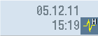

Creating an HMI trace
The "HMI trace" function is available for extended diagnostics of the operating software. The prerequisite is at least access level 3 (user).
Procedure to create an HMI trace file:
-
An expert of the Service & Support Center provides a sltrc_keybitset.ini file. Copy the sltrc_keybitset.ini file to a USB memory medium and load the file on the controller or operator panel.
-
In the operating area, select "Start-up" → "HMI" → "Diagnostics >" → "HMI trace".
-
Select the INI file on the USB memory medium with the "Load configuration" softkey.
-
Start the trace by activating the checkbox or from any place on the user interface with the following key combination:
<Alt> + <T> on the operator panel
<Alt> + <Shift> + <T> on an external keyboard
The following icon is displayed at the top right in the header to show that a trace is active:

-
On the user interface, repeat the operating sequence whose cause is to be clarified.
-
Stop the trace by deactivating the checkbox or from any place on the user interface with the following key combination:
<Ctrl> + <T> on the operator panel
<Ctrl> + <Shift> + <T> on an external keyboard
-
A sltrc.out output file is generated which you can copy to the storage medium with the "Export data" softkey.
-
Send the sltrc.out file for analysis back to the Service & Support Center.
|
|
Note
|
|
On completion of the analysis, it is recommended to delete all files under the following path: ../user/sinumerik/hmi/log/sltrc
|
|
Note
|
"Extended" softkey
The other options in this dialog support suitably qualified service engineers in the analysis of the system and evaluation of the HMI trace.
|